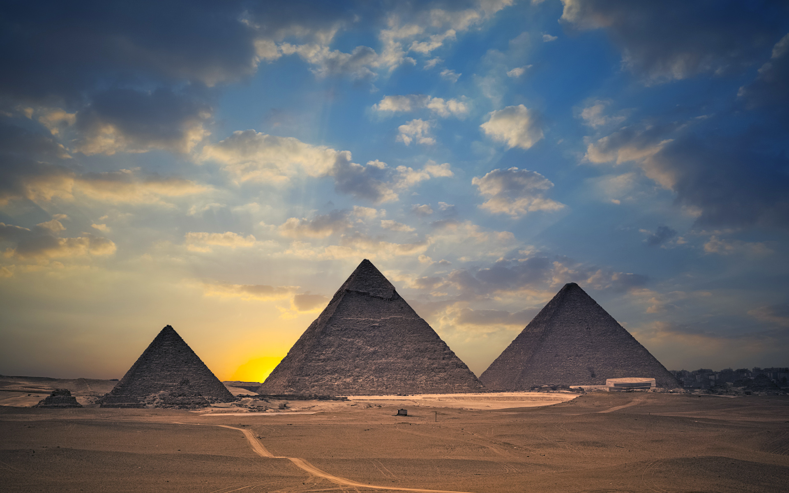

PYRAMIDE

PyramidDefinition
by Joshua J. Mark
published on 02 September 2009
A pyramid is a structure or monument, usually with a quadrilateral base, which rises to a triangular point. In the popular imagination, pyramids are the three lonely structures on the Giza plateau at the edge of the Sahara Desert but there are over seventy pyramids in Egypt stretching down the Nile River Valley and, in their time, they were the centers of great temple complexes. Although largely associated exclusively with Egypt, the pyramid shape was first used in ancient Mesopotamia in the mud-brick structures known as ziggurats, and continued to be used by the Greeks and Romans. Pyramids are also found south of Egypt in the Nubian kingdom of Meroe, in the cities of the Maya throughout Central and South America, and, in a variation on the form, in China.
Egyptian Pyramids
Known as 'mr' or 'mir' by the Egyptians, the pyramid was a royal tomb and considered the place of ascent for the spirit of the deceased pharaoh. From the top point of the pyramid, it was thought, the soul would travel to the after-life of the Field of Reeds and, if it so chose, could easily return to earth (the high pinnacle of the pyramid, or a life-like statue of the king, serving as a beacon the soul would recognize). Early on, the simple mastaba served as a tomb for the common people and royalty alike but in the Early Dynastic Period (c. 3150-2613 BCE) the pyramid design was developed under the reign of Djoser of the Third Dynasty (c. 2670-2613 BCE).
Djoser's chief architect Imhotep (c. 2667-2600 BCE) decided to try something which had never been attempted before: to build a colossal monument entirely of stone. Instead of the simple mastaba tomb, he designed and engineered a process whereby the earlier mud-brick mastabas would be built of limestone block and would be placed on top of one another, each level a little smaller than the one beneath, to create a pyramid. This series of large, stone, stacked mastabas, carefully built in a graduated design, became the first pyramid in Egypt - the famous Step Pyramid at Saqqara. Djoser's pyramid rose 204 feet (62 meters( high and was composed of six separate 'steps’. The base of this pyramid was 358 by 411 feet (109 by 125 meters) and the 'steps’, or layers, were faced with limestone. The pyramid was built in the center of a grand complex of temples, houses for the priests, and administrative buildings which covered 40 acres (16 hectares) and was encircled by a wall 30 feet (10.5 meters) high. In designing this pyramid and complex, Imhotep created the tallest structure in the world at that time which instantly became Saqqara's leading tourist attraction.
The first pyramid, as we would recognize the structure today, appeared in the 4th Dynasty in the reign of Snofru who completed two pyramids at Dashur.The first pyramid, as we would recognize the structure today, appeared in the Fourth Dynasty in the reign of Snofru who completed two pyramids at Dashur as well as finishing the work begun on his father’s pyramid at Meidum. These pyramids also made use of the gradation of stone blocks of limestone but the blocks were cut smaller as the structure rose, providing a smooth outer surface instead of the 'steps' which was then covered in limestone. The most outstanding example of pyramid building in Egypt was the Great Pyramid of Khufu at Giza, the last remaining of the Seven Wonders of the Ancient World, with a base covering thirteen acres and composed of 2,300,000 stone blocks. Known as the Horizon of Khufu in ancient times, the pyramid was positioned for precise astrological alignment.
Mesoamerican Pyramids
The pyramids of Mesoamerica follow this precise design even though there is no evidence of cultural exchange between Egypt and cities such as Chichen Itza or Tikal or the great city of Tenochtitlan. The great pyramids of the Mayan civilization, and other indigenous tribes of the region, are thought to represent mountains which symbolized man's attempt to reach closer to the realm of the gods. The pyramid known as El Castillo, at Chichen Itza, was specifically designed to welcome the great god Kukulkan back to earth at the spring and autumn equinoxes. On those dates, the sun casts a shadow which, owing to the construction of the pyramid, appears to be the serprent god descending down the stairs of the pyramid to the ground.
Chichen Itza
Other Pyramids
Evidence of pyramid-building in Greece exists in archaeological excavations at Hellenicon and in the works of the ancient writer Pausanius who recorded seeing two pyramids in Greece. The Grecian pyramids function remains mysterious in that the ruins at Hellenicon are not as well preserved as the pyramids of Egypt and there exist no records by the Greeks mentioning pyramid-building.
Pausanius’ accounts seem to indicate the pyramids were monuments to fallen heroes and, perhaps, some were; but the fact that the ruins at Hellenicon have a door in the base which can only be locked from the inside has led some scholars to speculate that perhaps pyramids were used as watchtowers (rising in pyramid shape but without the pinnacle). As the top of the pyramid at Hellenicon is long missing, however, and as there are no accounts of it from antiquity, this must remain speculation.
Meroe Pyramids Reconstruction
In Roman times the pyramid returned to the Egyptian use as a tomb and the Pyramid of Cestius still stands today in Rome near the Porta San Paulo. Built between 18 and 12 BCE, the pyramid was the tomb of the magistrate Gaius Cestius Epulo and rises 125 feet from a base of 100 feet. There is some disagreement over whether the Romans took the pyramid shape from Egypt or from Nubia, as the shape and interior design of Cestius’ pyramid could be interpreted as either but not definitively as one or the other. The pyramids of the Kingdom of Meroe (south of Egypt in modern-day Sudan) are identical to those of Egypt though seem to be lacking the intricacy of interior chambers.
Conclusion
In every culture which made use of them (and, of course, as mentioned, there were pyramids also in China, throughout Mesoamerica, in India and, later, throughout Europe) the pyramid was the centerpiece of a surrounding complex. Today the Great Pyramid at Giza sits between the two smaller pyramids and other recently excavated Mastabas but, originally, would have risen above terraces and walks and buildings dedicated to the spirit of the deceased or to the gods of that particular place. Worker's villages once rose on the plateau of Giza which gave rise to shops and and trade centers. These workers were not foreign slaves but Egyptians who were either recruited for labor as a religious sacrifice, volunteered as community service, or were paid for their time and talents. Archaeological excavations have found no evidence of forced labor on the pyramids at Giza nor on any of the other monuments of Egypt. The popular impression of Hebrew slaves toiling under the lash to build the pyramids comes from the biblical Book of Exodus and nowhere else save fictions and films which have popularized the story. The Giza plateau was no slave quarter where people were forced to work against their will but a thriving community of Egyptians who lived, worked, and worshipped there. The positioning of the Sphinx at Giza, as well as recent archaeological finds there and elsewhere in Egypt, support the theory of Pyramid Complexes as centers of worship, work, commerce, and social life rather than lone tombs erected on empty plains.